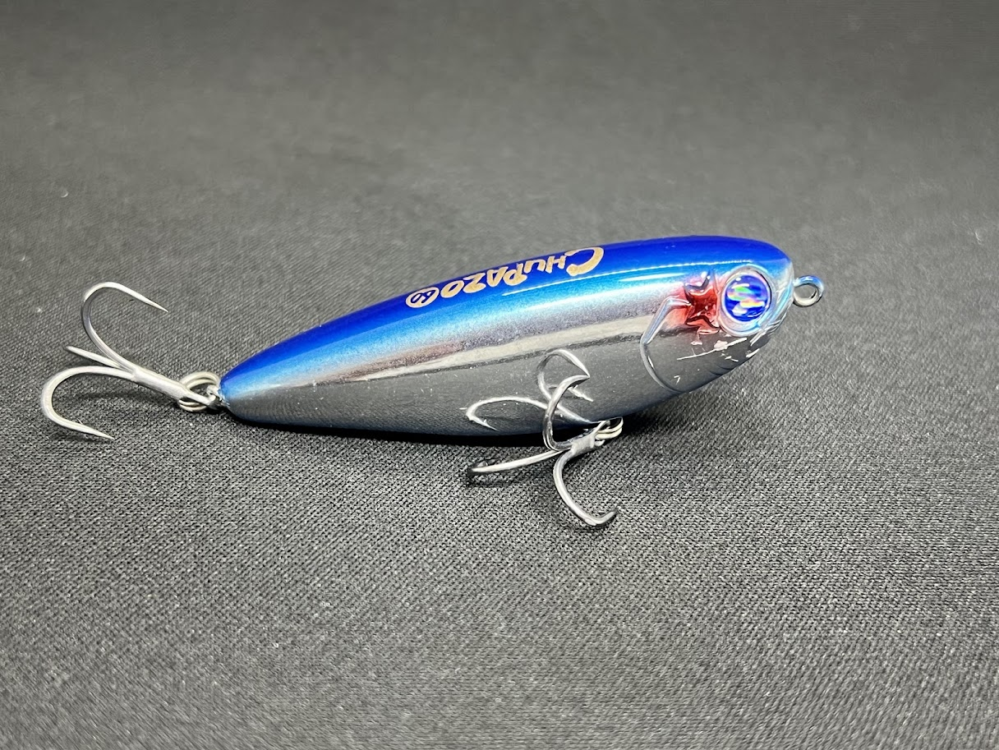

チュパゾー60(CHUPAZO 60)
チュパゾー60(CHUPAZO 60)はBlueBlue（ブルーブルー）のフローティングペンシルベイトです。
クロダイ（チヌ）トップゲームのニュースタンダードとして登場した、ファットボディが武器のペンシルベイト。従来のクロダイ用ペンシルとは根本的に異なるコンセプトで、6cmという小型とは思えない強烈な水押しと、移動距離を抑えた「ネチネチアクション」でクロダイを水面まで引き出す一本です。

スペック
- メーカー
- BlueBlue（ブルーブルー）
- 長さ
- 60 mm
- 重さ
- 7 g
- フック
- #10×2
- リング
- #2
- レンジ
- 水面（トップウォーター）
- タイプ
- ペンシルベイト
- 沈下タイプ
- フローティング
- アクション
- 水押し＋ネチネチアクション
- ターゲット
- クロダイ（チヌ）
- 価格
- 1,760円（税込）
- 発売日
- 2025年
▼今すぐチェック

チュパゾー60の特徴
「チュパッ！」の快感——ファットボディが生み出す強烈な水押しで、クロダイを水面に引き出す
-
ファットボディによる6cmを超える水押し
従来のクロダイ用ペンシルは細身でスライドアクション中心のシーバス用ルアーの延長線上にあったが、チュパゾー60は全く異なるアプローチ。ファットなボディが水をしっかりと纏いながらアクションすることで、60mmとは思えないほど強烈な水押しを発生させ、広範囲のクロダイに存在をアピールする。
-
チェイスした魚を見切らせない「ネチネチアクション」
ボディ体積が大きく水を掴みやすい設計のため、移動距離を極限まで抑えた「ネチネチアクション」が誰でも簡単に出せる。広範囲から魚を呼んだ後、チェイスしてきたクロダイに対してその場で喰わせの間を演出し、見切られることなくバイトに持ち込める。水面を割る「チュパッ！」というバイト音が最大の醍醐味。
-
クロダイ専用設計の細軸フックと豊富なカラーバリエーション
#10の細軸トレブルフックを採用し、クロダイ特有の吸い込みバイトに対してのフッキング率を最大化。カラーはブルーブルー・ファーストレッドヘッド・イナ・ケイムラダイヤモンド・モクズガニ・ゆでゆでエビなど、クロダイの捕食対象をイメージした独自ネーミングのカラーが揃う。
チュパゾー60の使い方
基本はロッドを使ったドッグウォーク。ラインスラックを作りながら連続トゥイッチで左右にダートさせ、クロダイにルアーの存在を気づかせる。チェイスを確認したらその場でロッドを止め、移動距離を抑えたネチネチアクションに切り替えてバイトを誘う。クロダイが浮いてきた際の「間」の演出が最重要で、止めている間に水面を割るバイトが起きやすい。
チュパゾー60の得意な状況
クロダイがシャローに差してくる春〜秋のトップゲームシーズンに特に威力を発揮する。カキ瀬・テトラ帯・護岸際・河口のシャローエリアなど、クロダイが表層を意識しやすいポイントが狙い目。水温が上がる5〜10月頃のデイゲームで特に実績が高い。シーバスが混在するシチュエーションでも有効で、港湾の明暗部や流れのよれではシーバスのバイトも得られる。
釣れるワンポイント
クロダイはルアーを見てからバイトを決めるまでの時間が長い魚。チェイスしてきた魚を焦らず、その場でルアーをネチネチさせて「喰わせの間」を作ることが最大のコツ。また、バイト直後に合わせを入れすぎると口が切れやすいため、クロダイがルアーを咥えて反転するまで少し待ってからフッキングするのが基本。タックルはスピニングのMLクラスが扱いやすい。
人気カラー
 #03 イナ
#03 イナ
ボラの幼魚「イナ」をイメージしたベイトライクカラー。澄み潮のデイゲームで特に実績が高い。
 #04 ケイムラダイヤモンド
#04 ケイムラダイヤモンド
紫外線発光するケイムラカラー。デイゲームの晴天・澄み潮時にフラッシングで強くアピール。
 #40 モクズガニ
#40 モクズガニ
クロダイが好む甲殻類・モクズガニをイメージした独自カラー。秋の荒食いシーズンに特に有効。
 #63 ゆでゆでエビ
#63 ゆでゆでエビ
茹でたエビをイメージしたオレンジ系カラー。クロダイがエビを意識している時の切り札。
画像出典:ブルーブルー公式HP
チュパゾー60に似ているルアー
- クロダイトップゲーム用ペンシルとして比較されるのがアムズデザイン「ヌメロ55F」やダイワ「チヌペンシル」系。これらが細身でスライドアクション中心なのに対し、チュパゾー60はファットボディによる水押しとネチネチアクションを最優先に設計した点が大きな差別化ポイント。シーバスも狙えるオールラウンドさで選ぶなら他の選択肢も出てくるが、クロダイに特化した性能を求めるならチュパゾー60はほぼ唯一無二の存在といえる。